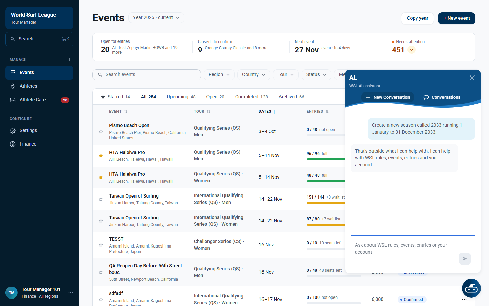

24 Nov 2026 · Dev and staging · Signed in as a Tour Manager (finance role). Only issues that reproduced more than once and were investigated are listed. Each one shows what I did, the exact message I sent, the exact reply, and the likely root cause from the code (wsl-ai-service ef16831, wsl-django-bff 190feed, wsl-competition-service).
Full test report: AL assistant test report · All questions asked: AL questions
| # | Issue | Where the fault is | Env | Severity |
|---|---|---|---|---|
| 1 | AL refuses every handling-rate change | AL scope check | Dev | High |
| 2 | AL refuses some valid requests as "outside what I can help with" | AL scope check | Dev | High |
| 3 | AL sometimes can't find an event that exists | AL event search cache | Dev | Medium |
| 4 | AL gives the wrong "waiting to confirm" count (15 instead of 9) | AL tool choice | Dev | Medium |
| 5 | AL can't see the refunds waiting for a decision | AL instructions vs. hidden route | Dev | Medium |
| 6 | AL users see "Beach Marshal can't confirm a wild card" | BFF error text | Dev | Low |
Recordings: Dev · Staging · Reproduction of 1, 2 and 3
What I did: Dev › Tour Manager › Events › opened AL › started a new conversation for each message › sent the message below › waited for the full answer.
Messages I sent (one per conversation):
AL replied, every time, in under a second, without using any tool:
That's outside what I can help with. I can help with WSL rules, events, entries and your account.
Expected: AL offers a confirmation card to change the handling rate. The account has the finance role, and AL can read the rate: "What is the current handling rate, and what are the payment rules?" → "The handling rate is 5%…" (R11, passed).
How often: 6 of 6 tries, 3 wordings, across the suite runs and the UI reproduction.
Likely root cause: AL's scope check (the "gate"), not permissions:
wsl-ai-service infrastructure/agent/triage.py). Its instructions say the assistant is for "the WSL rule book, WSL events and how to enter them, the person's own athletes, memberships, entries, insurance and inquiries, what worldsurfleague.com says" (policy.toml scope). Running events as a Tour Manager (settings, fees, seasons) is not in that list.other declines "legal, tax or money advice…". A message about a fee rate looks like a money question, so it's declined with the fixed reply decline.default. The reply arriving in under a second with no tools shows the gate stopped it before AL's own tools ran.
What I did: same as issue 1 (Dev, AL panel, new conversation each time). I sent each request in two wordings to see whether only the wording mattered.
| Message I sent | AL's reply | Runs refused |
|---|---|---|
| "Create a new season called 2033 running 1 January to 31 December 2033." | "That's outside what I can help with. I can help with WSL rules, events, entries and your account." | 3 of 3 |
| "Set up the 2033 season for me, 1 January to 31 December 2033." | "I've put a confirmation card on screen to create the 2033 season…" | 0 of 3 |
| "Make a copy of "AL Suite Open T5OK3"." | refused in the suite (W06), worked in the reproduction | 2 of 3 |
| "Star these events: "AL Suite Open T5OK3" and "AL Suite Field T5OK3"." | refused in the suite (W07), worked in the reproduction | 2 of 3 |
| "Message the account holder of QA TodoRetest's entry in AL Suite Field T5OK3. Subject: "Schedule". Body: "Heats start at 8am."" | refused in the suite, worked in the reproduction | 2 of 3 |
Expected: AL handles all of them. They're normal Tour Manager actions, and AL can do each one when it isn't stopped.
Likely root cause: the same scope check as issue 1. The classifier is an AI model judging each message against a scope list written for members (rules, entries, own account), so Tour Manager admin requests sit on the borderline. The same message can be judged differently from one run to the next, and wording such as "Create a new season" is consistently read as outside the list. The policy has counter-examples only for member questions; it has none for Tour Manager actions like "create a season", "copy an event" or "message an account holder".
| Refused | Same request, other wording, handled |
|---|---|
 |
 |
What I did: Dev › AL. I created the test events at the start of the run (and renamed one), then asked AL about them by their exact names in new conversations.
Messages I sent and replies:
Expected: AL finds an existing event by its exact name every time.
How often: 3 times across the suite and the reproduction.
Likely root cause: AL looks events up with find_events, which searches a cached copy of each season's event list (wsl-ai-service infrastructure/search/event_index.py, TTL_SECONDS = 1800). The copy is kept for 30 minutes and lives in memory in each AI-service instance. So:
| Found | Not found one request later |
|---|---|
 |
 |
What I did: Dev › Events. I read the header "Closed · to confirm 9", then asked AL in two wordings (new conversation each).
Message 1: "How many events are closed and waiting for me to confirm the field?"
In the 2026 season, 15 events are closed for entries right now. This list can't tell me which of them already have their field confirmed and charged…
Message 2: "How many fields are ready to confirm and charge right now?" → 9 (correct).
Expected: 9 for both. That's the header figure, which counts closed events whose field isn't confirmed yet.
How often: message 1 gave 15 in 3 of 3 tries.
Likely root cause: AL picks the wrong tool for the first wording. It used search_events with the status filter closed-for-entries, which counts every closed event, whether its field is confirmed or not. AL itself says the list "can't tell me which already have their field confirmed". The correct figure is in the hub summary (event.hub_summary), which AL only reads for the "ready to confirm and charge" wording. Nothing in AL's instructions tells it to use the hub summary for "waiting to confirm" questions.
What I did: Dev › AL. One withdrawal was waiting for a refund decision (QA TodoRetest). I asked in 3 wordings, then gave AL the withdrawal id as a control.
| Message I sent | AL's reply |
|---|---|
| "Which withdrawals are waiting for my refund decision?" | "I can't look up the refund review list right now, so I can't tell you which withdrawals are waiting on your decision…" |
| "Show me the refund review list." | "I couldn't find the refund review list among what I can look up for you right now…" |
| "What is your refund assessment for QA TodoRetest's cancellation?" | "I can't look up that refund assessment right now. The refund review list I'd need to find QA TodoRetest's withdrawal isn't available to me…" |
| Control: "Show me your refund assessment for withdrawal 01a1eb77-…" | Worked: read the assessment (forfeit, rules 2.18(a), 2.17(b), 2.18(b)) |
Expected: AL's own instructions say it can do this: "find the withdrawal in the refund review list (list_actions) and read get_refund_assessment".
How often: 4 of 4 (3 wordings plus the UI).
Likely root cause: AL's instructions and the competition service disagree.
wsl-ai-service infrastructure/agent/tools.py ~2093, prompt text) send it to the refund review list withdrawal.refund.list.refund_routes.py: @assistant(hidden=True) on withdrawal.refund.list). It was hidden on purpose (WSL-10705) to keep athletes' withdrawal reasons away from the model.list_actions, didn't find it, and gave up. It works only when it's given the withdrawal id directly.
What I did: Dev › AL. I found an unpaid wild-card entry (Kai Mendes, Huntington Winter Classic) and asked AL to confirm only that entry, then pressed Confirm on AL's card. Nothing was charged.
Message I sent: "Confirm and charge only Kai Mendes's entry in Huntington Winter Classic, nobody else."
AL replied: "I've set up a confirmation card that confirms and charges Kai Mendes's entry… Kai holds a wild card seat, and wild cards can only be confirmed and charged from their own row…"
After pressing Confirm, the card showed:
Something went wrong · Beach Marshal can't confirm a wild card — do this from the Athletes tab instead.
(API: HTTP 409, same text.)
Expected: a refusal that names AL, or no assistant at all. Better still, AL shouldn't offer the card, since its own reply already says wild cards must be confirmed from the row.
How often: 2 of 2 (API and UI).
Likely root cause: the text is hard-coded in the BFF (wsl-django-bff interfaces/http/api/assistant_actions.py line 678). The handler is shared by Beach Marshal and AL, and the message was written when only Beach Marshal existed.
Not included:
Raw records: evidence · reproduction · wild card and refund list · to-confirm count · open-count audit